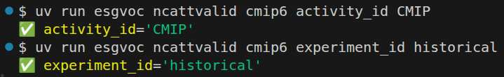
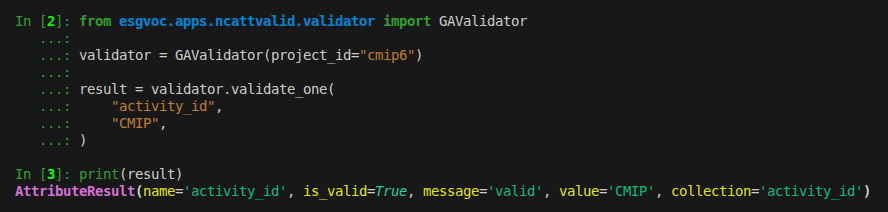
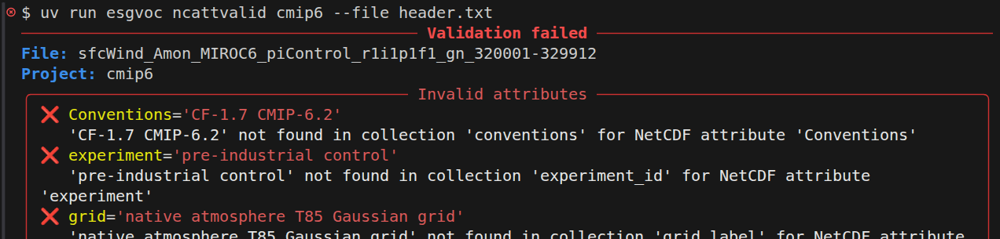
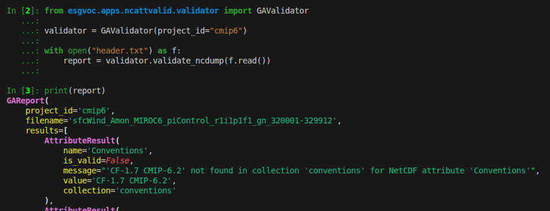

Valid Global Attributes#
The ncattvalid application validates NetCDF global attributes against ESGVOC controlled vocabularies and project specifications.
It can validate:
a single attribute/value pair
a full NetCDF header
This helps ensure that NetCDF files comply with CMIP metadata conventions and ESGVOC project specifications.
One Attribute#
esgvoc ncattvalid cmip6 activity_id CMIP
esgvoc ncattvalid cmip6 experiment_id historical

Note
This mode validates a single NetCDF global attribute value against the project’s controlled vocabulary.
from esgvoc.apps.ncattvalid.validator import GAValidator
validator = GAValidator(project_id="cmip6")
result = validator.validate_one(
"activity_id",
"CMIP",
)

Note
validate_one returns an AttributeResult object.
Validate a Full NetCDF Header#
Validate from stdin:
ncdump -h file.nc | esgvoc ncattvalid cmip6
Validate from a file:
esgvoc ncattvalid cmip6 --file header.txt
Verbose mode:
esgvoc ncattvalid cmip6 --file header.txt --verbose

Note
The input must be the output of:
ncdump -h file.nc
and contain a // global attributes: section to be parsed.
from esgvoc.apps.ncattvalid.validator import GAValidator
validator = GAValidator(project_id="cmip6")
with open("header.txt") as f:
report = validator.validate_ncdump(f.read())

Note
validate_ncdump returns a GAReport object.
Validation Report#
The validation report may contain:
✅ valid attributes
❌ invalid attributes
❓ missing required attributes
➕ extra attributes not defined in the project specification
Example output:
───────────────── Validation failed ─────────────────
File: test.nc
Project: cmip6
╭─ Invalid attributes ──────────────────────────────╮
│ ❌ activity_id='WRONG' │
│ 'WRONG' not found in collection 'activity_id' │
╰───────────────────────────────────────────────────╯
╭─ Missing required attributes ─────────────────────╮
│ ❓ experiment_id │
╰───────────────────────────────────────────────────╯
Error Handling#
Invalid or incomplete ncdump input raises an error.
Possible errors include:
missing
// global attributes:sectionmalformed attribute definitions
unknown NetCDF attributes
invalid controlled vocabulary values